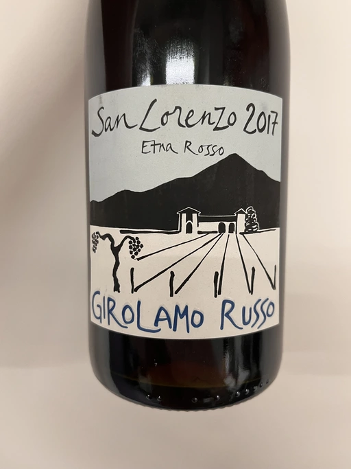

Il Pirata Vol. 3
One of my favourite parts of growing anything is the moment it sprouts. You feel relief. But you also hear the fear beating somewhere in the back of your heart. Cause the sprout is only beginning. Your decisions affect its life in non-binary ways. And I can say the same about our wine-tasting events. We plant the idea. And it grows. Somehow. I know it sounds like a quote from social media. But Sicily has a special place in my heart and mind. So when it comes to this topic, I want to share my personal and sometimes highly intimate perception of this land and its people.
So what’s the deal with this seed and sprout business? Look, it’s simple. There was an idea to gather for a wine-tasting event dedicated to Sicilian wines, but instead, we have two. Making a blind copy was not an option for me. Partially because some of the bottles are not available anymore. But also because different participants have different tastes. Yet despite all existing diversity, the Ukrainian market has its own state. And so, I decided to repeat two wines.
- Graffetta Grillo 2019
- Arianna Occhipinti SP68 Bianco 2017
- COS Pithos Bianco 2012
- Tenuta di Fessina A’Puddara Etna Bianco 2010
- COS Cerasuolo di Vittoria Classico 2010
- Tenuta di Castellaro Corinto 2017
- Girolamo Russo Etna Rosso San Lorenzo 2017
How come there is no Gulfi on this list? The primary reason is the interest of some people to taste A’puddara. And no spoilers, but we are going to taste a few vintages of Carjcante soon. So we’ll get our share of fun.
Graffetta Grillo 2019
- producer: Graffetta
- name: Grillo
- vintage: 2019
- grapes: Grillo
- appellation: Sicilia DOC
- location: Sicily, Italy
- alcohol: 13.5
- sugar: N/A
- price: 890 UAH
Arianna Occhipinti SP68 Bianco 2017
- producer: Arianna Occhipinti
- name: SP68 Bianco
- vintage: 2017
- grapes: Zibibbo, Albanella
- appellation: IGP Terre Siciliane
- location: Sicily, Italy
- alcohol: 12
- sugar: 0
- price: 836 UAH
Arianna Occhipinti is a winemaker from Vittoria who founded her own winery in 2004, bottled her first commercial vintage in 2006 and today works exclusively with estate fruit. She embraced winemaking thanks to her uncle, Guisto Occhipinti, proprietor of Vittoria’s most famous winery, COS. At the age of 16 years, Arianna started to help him in the cellars. She loved this experience so much that her future connected to wine tightly.
After graduating from oenology school, Arianna started with only 1 hectare of abandoned vines attached to a family vacation house. Over the years, she acquired 25 hectares featuring only autochthonous varieties - 50% Frappato, 35% Nero d’Avola and 15% white varieties Albanello and Zibibbo. Almost all vines are young because Arianna planted them on her own. But she also added to her holdings 60 years old albarello-trained vines, which she initially rented.
SP68 is the name of the road that cuts through Arianna’s original vineyard in Vittoria. This road has existed for hundreds of years already. And the wine acquired this name because Arianna sees wine as a journey.
It’s a 60-40 blend of Zibibbo and Albanello from 15 years old vines growing on red sands and chalk soils. The fruits are destemmed and co-fermented with indigenous yeasts in concrete tanks with two weeks long maceration. After that, the wine ages for 6-8 months in concrete tanks.
Tenuta di Fessina A’Puddara Etna Bianco 2010

- producer: Tenuta di Fessina
- name: A’Puddara Etna Bianco
- vintage: 2010
- grapes: Carricante
- appellation: Etna DOC
- location: Sicily, Italy
- alcohol: 12.5
- sugar: N/A
- price: 2190 UAH
Mount Etna. Crazy winemaking region with its charm, elegance, beauty, and, most importantly, character. A place to visit, to fall in love with, and stay for the rest of your life. After visiting Sicily in 2006, Silvia Maestrelli decided to start a new phase in her life. And after lengthy negotiations with numerous landowners, she started Tenuta di Fessina on the slopes of Etna mountain. Since its start in 2007, Silvia Maestrelli was trying to combine the sensitivity of a “feminine” oenological vision with the unquestioned technical skills of consultants and collaborators.
A’puddara (a pole star) is an ode to Carricante, a guiding star of Mount Etna. The 2 ha vineyard was planted in 1950 at 900 meters above sea level. It is located in the Biancavilla production area (southern parts of the volcano), Contrada Manzudda. This area is composed of small volcanoes and crates from remote eras. They led to the formation of limestone caves and a terroir composed mainly of clayey particles, lapilli leftovers, sand and volcanic ash. There are tiny fractions of potassium, basaltic lavas and ancient tuffs. Combined with thermic excursion and the high rates of the genotypic acidity of the indigenous grapes (including Carricante), it is believed that the terroir produces wines with great ageing potential. Well, we have an opportunity to check it.
The fruits are crushed without de-stemming and softly pressed with separation of the musts. After cold static decantation, the wine is fermented in 3500-litre French oak barrels. Refined on lees for 6-8 months. Total production is relatively small - 6000 regular and 150 magnum bottles.
COS Cerasuolo di Vittoria Classico 2010
- producer: COS
- name: Cerasuolo di Vittoria Classico
- vintage: 2010
- grapes: Nero d’Avola, Frappato
- appellation: Cerasuolo di Vittoria DOCG
- location: Sicily, Italy
- alcohol: 13
- sugar: 1
- price: 3032 UAH
After spending some time with Arianna Occhipinti, let’s give a visit to her uncle, Guisto Occhipinti. Azienda Agricola COS was founded in 1980 by three friends: Giambattista Cilia, Giusto Occhipinti, and Cirino Strano. The name is just an acronym of their family names (in case you didn’t notice). The trio is known for the transformation of Cerasuolo di Vittoria wine from DOC to DOCG level (the only one on the island), as their 2005 release was the first to bear the new designation.
COS started its adventure with biodynamic farming and neutral terracotta vases. In 2007 (after moving to a new location), they decided to get rid of all their oak barrels in favour of 150 huge amphoras.
So today, we have a bottle of Cerasuolo di Vittoria Classico made in those amphoras. A 60-40 blend of Nero d’Avola and Frappato growing at 230 meters above sea level on red soils of limestone-siliceous nature. The average age of vines is 25 years. Yet there is a strange thing that apparently can be explained by the outdated state of the site. According to their site, the wine was aged in Slavonian barrels. Where do they come from if COS got rid of all barrels? Mystery, isn’t it? In any case, technical information is scarce, so I pity those who missed our tasting event.
Tenuta di Castellaro Corinto 2017
- producer: Tenuta di Castellaro
- name: Corinto
- vintage: 2017
- grapes: Corinto
- appellation: IGP Terre Siciliane
- location: Sicily, Italy
- alcohol: 13
- sugar: N/A
- price: 1250 UAH
Now let me ask you a question. What do you know about winemaking on the Aeolian Islands? A volcanic archipelago in the Tyrrhenian Sea north of Sicily, best known for Stromboli and Lipari. But wines? Tenuta di Castellaro is probably the only winery known outside of this land. Alright, alright. We already tasted this particular wine on 2nd November 2021 as part of the first Il Pirata. So some of you are not amazed at all. Still…
Massimo Lentsch and Stefania Frattolillo, entrepreneurs from Bergamo (Lombardy), simply fell in love with Lipari and decided to create a work of art here. The winery came to life in 2005. They invited Alessandro Zanutta, an agronomist from Collio, and Emiliano Falsini, a winemaker from Tuscany. You see, it’s all about coming there and not being able to fleet.
Today we have a bottle made of Corinto Nero. It is a rare grape that originates from Greece, though today, it also grows in Turkey and the Po Valley in Emilia-Romagna. As they joke, this bottle exists only thanks to eno-archeology. The vines grow at 350 meters above sea level on sandy, volcanic, deep and fertile soils rich in microelements. The grapes are handpicked and destemmed. Vinification happens in French oak barrels with maceration for about 10 days. After that, the wine is poured into 500L barrels where malolactic fermentation takes place and is then aged for at least one year prior to bottling.
Girolamo Russo Etna Rosso San Lorenzo 2017

- producer: Girolamo Russo
- name: Etna Rosso San Lorenzo
- vintage: 2017
- grapes: Nerello Mascalese
- appellation: Etna DOC
- location: Sicily, Italy
- alcohol: 14.5
- sugar: 1
- price: 1578 UAH
Making wine on the slopes of Mount Etna is an intensely personal, profound and ongoing act of love.
Some are just ‘lucky’ to be affiliated with Etna by the right of birth. Unlike Silvia Maestrelli, Giuseppe Russo, a graduate of Humanities with a Diploma in piano, re-established the family winery in 2005 and dedicated it to the memory of the late father, Girolamo. Their vineyards cover 18 hectares, surrounded by hazelnut and olive groves.
San Lorenzo is set outside Randazzo on the lower slopes of the volcano, 700 to 800 meters above sea level. The contrada is named after the cult of St. Lawrence. The wine is a blend of Nerello Mascalese with a tiny bit of Nerello Cappuccio. The 70 to 100 years old vines grow on volcanic (who would guess?) and sandy soils rich in minerals. Spontaneously fermented with indigenous yeasts. Macerated for 15 days and aged for 18 months in used 2600L oak casks. A relatively tiny production, only 4000 bottles yearly.
Scores
| Wine #1 | Wine #2 | Wine #3 | Wine #4 | Wine #5 | Wine #6 | Wine #7 | |
|---|---|---|---|---|---|---|---|
| Boris | 1.00 | 1.00 | 1.00 | 1.00 | 1.00 | 1.00 | 1.00 |
| amean | sdev | favourite | outcast | price | QPR | |
|---|---|---|---|---|---|---|
| Wine #1 | 1.00 | 0.0000 | 0.00 | 0.00 | 100.00 | 1.0000 |
| Wine #2 | 1.00 | 0.0000 | 0.00 | 0.00 | 100.00 | 1.0000 |
| Wine #3 | 1.00 | 0.0000 | 0.00 | 0.00 | 100.00 | 1.0000 |
| Wine #4 | 1.00 | 0.0000 | 0.00 | 0.00 | 100.00 | 1.0000 |
| Wine #5 | 1.00 | 0.0000 | 0.00 | 0.00 | 100.00 | 1.0000 |
| Wine #6 | 1.00 | 0.0000 | 0.00 | 0.00 | 100.00 | 1.0000 |
| Wine #7 | 1.00 | 0.0000 | 0.00 | 0.00 | 100.00 | 1.0000 |
How to read this table:
ameanis arithmetic mean (and not ‘amen’), calculated as sum of all scores divided by count of scores for particular wine. It is more useful thantotal, because on some events some wines are not tasted by all participants.sdevis standard deviation. The bigger this value the more controversial the wine is, meaning that people have different opinions on this one.favouriteis amount of people who marked this wine as favourite of the event.outcastis amount of people who marked this wine as outcast of the event.priceis wine price in UAH.QPRis quality price ratio, calculated in as100 * factorial(rms)/price. The reason behind this totally unprofessional formula is simple. At some point you have to pay more and more to get a little fraction of satisfaction. Factorial used in this formula rewards scores close to the upper bound 120 times more than scores close to the lower bound.